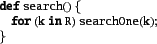
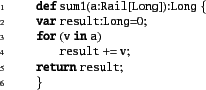
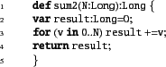
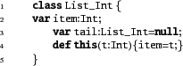

A program consists of a collection of top-level compilation units
(``unit'' for short). A unit is either a class, a struct
or an interface.
![\begin{xtennum}[]
package examples;
import x10.io.Console;
public class Hello {
...
...'The answer is: ''+result);
}
public def run():Boolean=true;
}
\end{xtennum}](img2.png)
Classes, structs and interfaces live in packages (e.g. examples above). Packages typically consist of a sequence of identifiers separated by ``.'' (with no spaces).
Packages are used to control access to top-level units. If they are marked public they can be accessed from code in any other package. If they have no accessibility modifier, they can be accessed only by code living in the same package.
A file can contain multiple units - however only one of them may be marked public. The name of the file must be the same as the name of the public unit, with the suffix ``.x10''.
The fully qualified name (FQN) of a class, a struct or an interface is the name of the class, the struct or the interface prefixed with the name of the package that unit lives in. For instance, the FQN for the class above is examples.Hello. A unit A must use the FQN of another unit B unless it has an explicit import statement.
For instance:

permits the name Console to be used in all the units
in the file without being qualified by the package name.
Packages are ``flat'' - importing a package x10 does not imply (for instance) that the package x10.examples is imported automatically. However, the name of a package is connected to the directory structure of the code. All the units defined in a package x10.examples must live in files in the directory x10/examples (relative to some base directory). All the units defined in the package x10 must live in files in the directory x10.
A class is a basic bundle of data and code. It specifies a number of members, namely fields, methods, constructors, and member classes and interfaces. Additionally a class specifies the name of another class from which it inherits (the superclass) and zero or more interfaces which it implements.
The members available at a class (i.e. that can be used by variables whose type is that class) are those defined at a class, and those defined in superclasses.
A class may be marked final. final classes cannot be subclassed.
A field specifies a data item that belongs to the class:
![\begin{xtennum}[]
var nSolutions:Long = 0;
public static val expectedSolutions =...
..., 724, 2680, 14200, 73712, 365596, 2279184, 14772512];
val N:Long;
\end{xtennum}](img4.png)
Fields may be mutable (var) or immutable (val). The type of a mutable field must always be specified (it follows the name of the variable, and a ``:''). A mutable field may or may not be initialized. The type of an immutable field may be omitted if the field declaration specifies an initializer. For instance, in the above fragment the type Rail[Long] is inferred for the field expectedSolutions. The value of an immutable field does not have to be specified through an initializer - as long as it is supplied in every constructor for the class. However, if an initializer is not specified the type of the field must be specified.
Fields may be instance or static. By default fields are instance fields, static fields are marked with the flag static (as illustrated above). Every object has one copy of an instance field. However, in each place, there is only one copy of each static field for all instances of that class in the place. In X10 static fields are required to be immutable.
Instance fields are inherited by subclasses. This means that an object always has enough space for the instance fields of the class of which the object is an instance, and all of the object's superclasses.
A field defined in a class may be shadowed in a subclass if the subclass defines a field with the same name (but possibly a different type). The value of a shadowed field can always be accessed by using the qualifier super.
It is a compile-time error for a class to declare two fields with the same name.
To make the compile-time type-checking of constraints more tractable,
X10 v 2.4.0 requires
that the types of properties are ``simpler'' than the type of the
class or struct they occur in. Specifically, the graph formed with
classes or structs as nodes and an edge from node  to node
to node  if
the class or struct corresponding to
if
the class or struct corresponding to  has a field whose base type
is
has a field whose base type
is  cannot have cycles. One consequence of this restriction is that
if a class or struct has a type parameter T, then the type of a
field cannot be T.
cannot have cycles. One consequence of this restriction is that
if a class or struct has a type parameter T, then the type of a
field cannot be T.
A method is a named piece of code, parametrized by zero or more variables (the parameters). A method may be void - in which case it returns no value and is usually called just for its effect on the store - or it may return a value of a given type.
A method may have one or more type parameters; such a method is said to be type generic. A method may have a method guard : the guard may specify constraints on the type parameters.
The signature of a method consists of its name and the types of its arguments. A class may not contain two methods whose signatures are the same. Additionally, a method specifies a return type. and zero or more checked exceptions that the body of the method is permitted to throw. (The body of the method may throw any number of unchecked exceptions.)
A value e may be returned from the body of a method by executing a return e; statement. The return type of a method may be inferred in X10 (that is, it does not need to be explicitly supplied by the user). It is the least upper bound of the types of all expressions e where the body of the method contains a return e statement.
Methods may be instance methods or static methods. By default methods are instance methods. Methods are marked static by using the qualifier static.
Consider the code in Table 2.1. The methods safe(j:Long), search(R:LongRange) and search() are instance methods. The instance methods of a class are available for every object that is an instance of the class. Instance methods are invoked using the syntax e.m(e1,..., en). e is said to be the receiver of the method invocation, and e1,...,en the arguments.
Each expression in X10 has a static type(Section sec:static-type). The compiler reports an error when processing a method invocation e.m(e1,..., en) if it cannot find precisely one method named m on the static type of e which has n arguments and which is such that the static type of ei is a subtype of the declared type of the ith argument.
The body of an instance method may access the state of the receiver
(called the current object) through the special variable this (Line nqueens-board-search29). Unless there is risk
of ambiguity, the prefix ``this.'' may be omitted; thus the
code can also be written as:

The code for static methods does not have an associated current
object, and hence cannot use this. Static methods are invoked
by naming the class as the receiver, e.g. NQueens.main(null).
Overloading is very convenient - it permits the programmer to use a method name for some abstract concept and than provide instantiations of that concept for different parameter types through different overloaded methods with the same name. The name search is overloaded in Table 2.1, for instance.
A class may specify zero or more constructors. For instance:

Constructors may be overloaded just like methods. The qualifiers private, public, protected may be used to limit access to a constructor.
Instances of a class are created by invoking constructors using the
new expression:

The compiler declares an error if it cannot find a constructor for the
specified class with the same number of formal arguments such that the
formal type of each argument is a supertype of the type of each actual
argument.
If a class does not have a constructor an implicit constructor
is created. If the class has no properties then the implicit
constructor is of the form:

If the class has properties x1:T1, ..., xn:Tn then the
implicit constructor is of the form:

A struct is a ``header-less'' object. It can be represented by
exactly as much memory as is necessary to represent the fields of the
struct (modulo alignment constraints) and with its methods compiled to
``static'' methods. This is accomplished by imposing certain
restrictions on structs (compared to objects). A struct
definition is just like a class definition except that it is
introduced by the keyword struct rather than by class. Like a class, a struct may define zero or more fields,
constructors and methods and may implement zero or more
interfaces. However, a struct does not support inheritance; it may not
have an extends clause. A struct may not be recursive: that
is, there can be no cycles in the graph whose nodes are struct
definitions and whose edges from  to
to  record that the struct
record that the struct  has a field of type (struct)
has a field of type (struct)  .
.
For instance the struct:

defines a Complex struct, instances of which can be
represented by exactly two doubles. An Array[Complex] with
N elements can be implemented (in the Native backend) with a
block of memory containing 2*N doubles, with each Complex
instance inlined.
X10 does not support any notion of a reference to a struct. Structs are passed by value. Equality == on structs is defined as point-wise equality on the fields of the struct. Further, structs are immutable; no syntax is provided to update fields of a struct in place. While these decisions simplify the language, they make it awkward to express certain kinds of code, hence mutability and references to structs may be introduced in future versions of the language.
For instance the function that takes an argument i that is an Int and returns
old(i) if i < n and newItem otherwise, is written as:

The type of this value is (Int)=>Int. Note that the return type is inferred in the above definition. We could also have written it explicitly as:

For instance:

Above, the type of the first value is (Int)=>Int, the type of
functions from Int to Int. The type of the second is
(Int,Int)=>Int.
A function is permitted to access immutable variables defined outside its body (such functions are sometimes called closures). Note that the immutable variable may itself contain an object with mutable state.
The return type can often be omitted - it is inferred to be the type of the return expression.
If x is a function value of type (S1, ..., Sn) => T, and s1, ..., sn are values of the given types, then x(s1,...,sn) is of type T.
The sequential statements of X10 should be familiar from Java and C++.
The statement d.f=e evaluates d to determine an object o. This object must have a field f that is mutable. This value is changed to the value obtained by evaluating e.
In both cases the compiler checks that the type of the right hand side expression is a subtype of the declared type.2.1
A while loop may be labeled l: while (c) S (just as any other statement). The body of a while loop may contain the statements continue l; and break l;. The first causes control to jump to the top of the loop labeled l, i.e. the rest of the code in the body of the loop following the continue l; statement is not executed. break l; causes control to jump after the loop labeled l (that is, control exits from that loop).
Here is an example of an explicitly enumerated for loop:
![\begin{xtennum}[]
def sum0(a:Rail[Long]):Long {
var result:Long=0;
for (var x:Long=0; x < a.size; ++x)
result += a(x);
return result;
}
\end{xtennum}](img19.png)
X10 also supports enhanced for loops.
The for loop may take an index specifier v in r, where r
is any value that implements x10.lang.Iterable[T] for some type
T. The body of the loop is executed once for every value
generated by r, with the value bound to v.

Of particular interest is LongRange. The expression e1
.. e2 produces an instance of LongRange from l to
r if e1 evaluates to l and e2
evaluates to r. On iteration it enumerates all the values (if
any) from l to r (inclusive). Thus we can sum the numbers
from 0 to N:

One can iterate over multiple dimensions at the same time using Region. A Region is a data-structure that compactly
represents a set of points. For instance, the region Region.make(0..5, 1..6) is a 2-d region of points (x,y) where x
ranges over 0..5 and y over 1..6. (The bounds are
inclusive.) The natural iteration order for a region is
lexicographic. Thus one can sum the coordinates of all points in a
given rectangle:
![\begin{xtennum}[]
def sum2(M:Long,N:Long):Long {
var result:Long=0;
val R = x...
...0..M, 0..N);
for ([x,y] in R) result += x + y;
return result;
}
\end{xtennum}](img22.png)
Here the syntax [x,y] is said to be destructuring syntax; it destructures a 2-d point into its coordinates x and y. One can write p[x,y] to bind p to the entire point.
Throwing an exception causes the call stack to be unwound until a catcher can be found (see below). If no catcher can be found the exception is thrown to the closest dyamically enclosing finish surrounding the throw point.
A description of the other control constructs may be found in [9].
X10 is a statically type-checked language. This means that the compiler checks the type of each expression, and ensures that the operations performed on an expression are those that are permitted by the type of the expression.
The name C of a class or interface is the most basic form of a type in X10. X10 also supports
A type specifies a set of members (fields, methods, constructors) that are defined on expressions of that type.
The availability of members of a type also depends on the accessibility relation. That is, a member of a type may be defined but not accessible (e.g. it is marked private).
A variable of a type S can only be assigned values whose static type T is the same as S or is a subtype of S.
A type C is a subtype of type E if there is some type D such that C is a subtype of D and D is a subtype of E.
If (class or interface) C[X1,...,Xm] extends or implements type D[S1,..., Sn] (for m and n non-negative integers) then for every mapping A from type variables to types, the type obtained by applying A to C[X1,...,Xm] is a subtype of the type obtained by applying A to D[S1,...,Sn].
A constrained type C{c} is a subtype of D{d} if C is a subtype of D and c implies d.
A nested type A.B is a subtype of C.D if A is the same as C and B is a subtype of D.
A function type (A1,...,Am)=>B is a subtype of (D1,...,Dn)=>E if m=n, Di is a subtype of Ai (for i in 1..n) and B is a subtype of E.
![\begin{xtennum}[]
class List[T] {
var item:T;
var tail:List[T]=null;
def this(t:T){item=t;}
}
\end{xtennum}](img23.png)
This specifies that the class definition actually specifies an
infinite family of classes, namely those obtained by replacing the type
parameter T with any concrete type. For instance, List[Int] is the class obtained by replacing T in the body
of the class with Int:

Clearly generic types are very convenient - after all they let you figure out the code of the class once, and then use it an unbounded number of times ... in a type-safe fashion.
X10 types are available at runtime, unlike Java (which erases them). Therefore, Array[Int] and Array[Float] can be overloaded. X10 does not have primitive types and Int etc. can be used to instantiate type parameters. Bounds may be specified on type parameters and methods can be invoked on variables whose type is that parameter, as long as those methods are defined and accessible on the bound.
A constrained type is of the form T{c} where T is a type and c is a Boolean expression of a restricted kind. c may contain references to the special variable self, and to any final variables visible at its point of definition.
Such a type is understood as the set of all entities o which are of type T and satisfy the constraint c when self is bound to o.
The permitted constraints include the predicates == and !=. These predicates may be applied to constraint terms. A constraint term is either a final variable visible at the point of definition of the constraint, or the special variable self or of the form t.f where f names a field, and t is (recursively) a constraint term. In a term self.p p must name a property of self.
Examples:

Constraints may also include occurrences of user-defined predicates. See [9] for details.
A type definition permits a simple name to be supplied for a complicated type, and for type aliases to be defined. A type definition consists of a name, an optional list of type parameters, an optional list of (typed arguments), an ``='' symbol, followed by a type in which the type parameters and arguments may be used.
For instance the type definition:

permits the expression boolean(true) to be used as
shorthand the type Boolean{self==true}.
X10 permits top-level type definitions. A type definition with
principal name N must be defined in the file
N.x10. This file may contain other declarations as well,
or may contain just the type definition.
Example:
![\begin{xtennum}[]
\par
package examples;
public class Matrix[T](I:Long,J:Long) {...
...type Matrix[T](I:Long,J:Long)=Matrix[T]{self.I==I,self.J==J};
\par
\end{xtennum}](img27.png)
![\begin{table}\fromfile{NQueens.x10}
\begin{xtennum}[]
class Board {
val q: Rail...
...nSolutions++;
return;
}
this.search(0..(N-1));
}
}
\end{xtennum}\end{table}](img7.png)